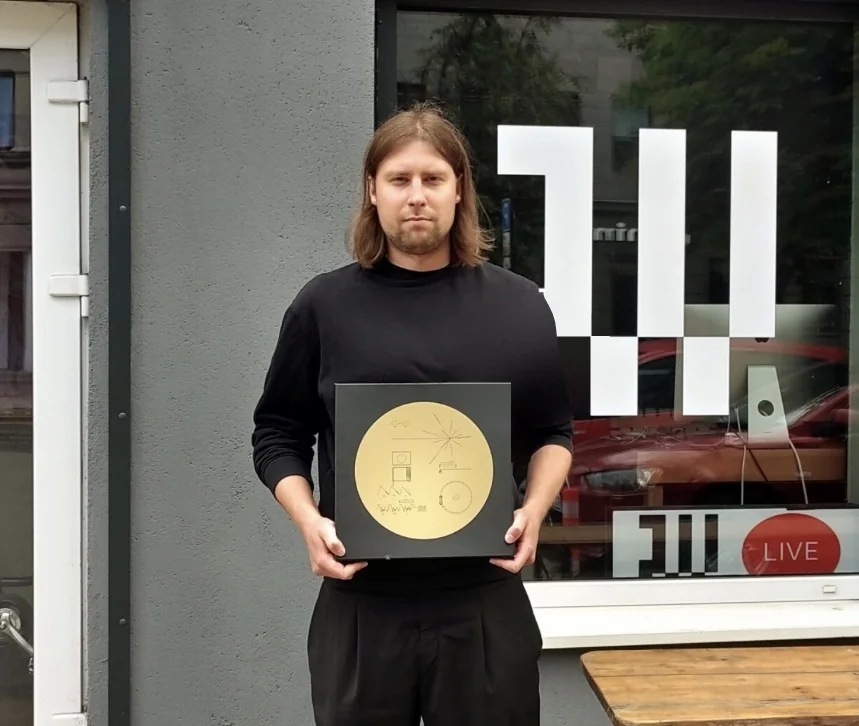

Off the clock, I'm a DJ and radio host. As Teller of Blue on NTS.live and Radio Vilnius, I blend experimental electronic music with planetary science, sharing the planets with people who'd never pick up a journal.

I played the Voyager Golden Record on vinyl, live on Radio Vilnius — the sounds and music of Earth that NASA's Voyager probes carried into space in 1977.
LISTEN ON RADIO VILNIUS ↗